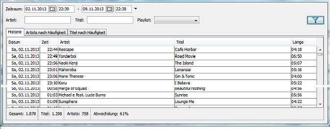

Gespielte Titel

Überblick
Über den Aufruf von kannst Du Informationen über gespielte Titel abrufen. Folgende Informationen können angezeigt werden:
- Die Historie mit Startzeit, Artist und Titel
- Gespielte Artists nach Häufigkeit
- Gespielte Titel nach Häufigkeit
Die Anzeige ist derzeit auf Musiktitel beschränkt und beinhaltet keine Jingles und Wortbeiträge.
Filter
Du kannst die Einträge nach verschiedenen Kriterien einschränken:
- Zeitraum: Wähle aus von wann bis wann die Einträge reichen sollen
- Artist: Gebe einen Namen oder einen Teil des Namens eines Artists an um nach Enträgen für diesen Artist zu suchen.
- Titel: Gebe einen Namen oder einen Teil des Namens eines Titels an um nach Enträgen für diesen Titel zu suchen.
- Playlist: Wähle eine Playlist aus um nur Einträge für die Zeiträume zu suchen in denen diese Playlist gemäß akuellem Sendeplan gespielt wurde.
Änderungen werden grundsätzlich erst nach einem Klick auf den Filtern-Button rechts wirksam.
Historie
Die Historie zeigt Dir die Einträge mit Startzeit, Artist und Titel an. Du kannst die Tabelle durch Klick auf die Kopfzeile der Spalte umsortieren.
In der Fußzeile werden einige statistische Informationen angezeigt:
- Gesamt: Zahl der Einträge
- Titel: Zahl der verschiedenen Titel
- Artists: Zahl der verschiedenen Artists
- Abwechslung: Dieser Prozentwert gibt an wie abwechslungsreich das Programm im gewählten Zeitraum war. Der Wert setzt sich zu 75% aus Titel/Gesamt und zu 25% aus Artists/Gesamt zusammen. 100% bedeutet das sich kein Titel und kein Artist wiederholt hat. Es liegt nahe dass dieser Wert auf kurzen Zeiträumen höher ist als auf längeren Zeiträumen.
Du kannst die Historie über das Kontextmenü im Excel-Format abspeichern.
Artists nach Häufigkeit
zeigt Dir eine Liste alle Artists an zusammen mit der Zahl der Häufigkeit mit der dieser Artist gespielt wurde.
Titel nach Häufigkeit
zeigt Dir eine Liste alle gespielten Titel an zusammen mit der Zahl der Häufigkeit mit der dieser Titel gespielt wurde.